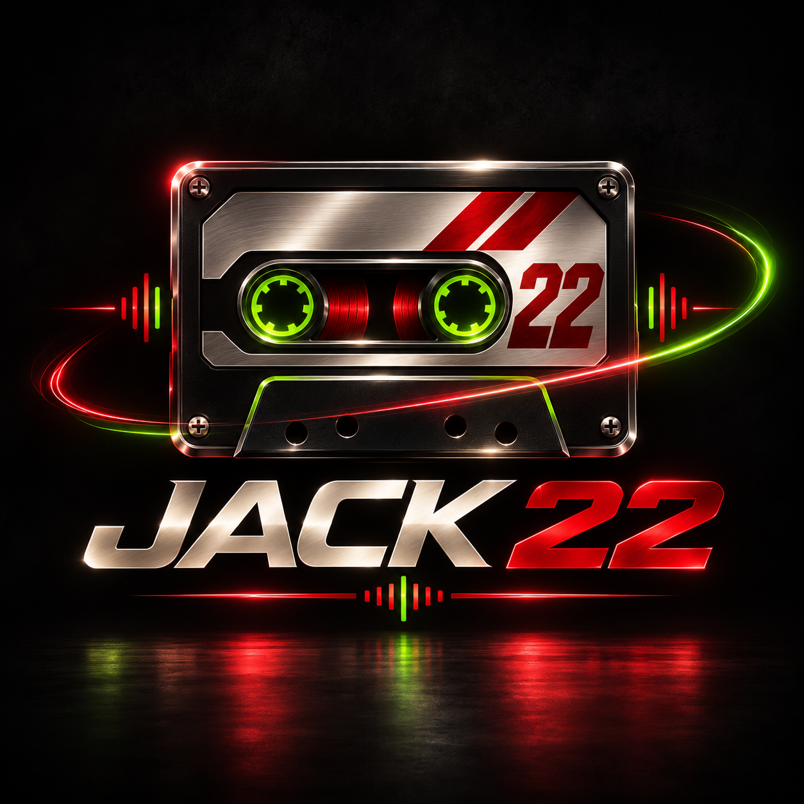

GÉNÉ
RATIONS
RATIONS
RAP / R&B / URBAIN / 92
Jack 22 réunit les radios rap à écouter maintenant. Tu choisis le mood, tu lances la radio officielle.
CHOISIR UNE RADIO ↓
SÉLECTION DU MOMENT
Jack 22 est une sélection. Chaque bouton ouvre la radio sur son propre site officiel.
SIMPLE
Jack 22 ne diffuse pas ses propres morceaux : il t'emmène vers les radios officielles déjà en ligne. Zéro émission à gérer, juste le bon son.